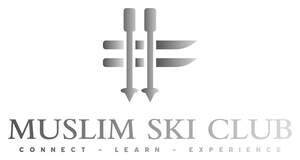

Trade Mark Journal No.2025/022 30 May 2025
UK00004202322 12 May 2025 (25,35,39,41,43)
Mark 1
Mark 2

- Class 25
- Ski hats; Ski wear; Ski suits; Ski trousers; Ski balaclavas; Ski jackets; Ski pants; Clothing for skiing; Ski boot bags; Ski gloves; Skiing shoes; Ski and snowboard shoes and parts thereof; Snowboard mittens; Apres-ski shoes; Footwear for snowboarding; Snow boarding suits; Snowboard trousers; Snowboard boots; Après-ski boots; Snowboard shoes; Snowboard jackets; Ski suits for competition; Ski boots; After ski boots; Snowboard gloves; Salopettes; Sports clothing [other than golf gloves].
- Class 35
- Advertising in the field of tourism and travel; Advertising; Advertising and marketing; Promotional and advertising services; Advertising, marketing and promotion services; Business management consultancy in the field of corporate travel; Marketing services in the field of travel.
- Class 39
- Organisation of holiday travel; Booking of holiday travel and tours; Holiday travel reservation services; Arranging holiday travel; Arranging of holiday transport; Package holiday services for arranging travel; Arranging and booking of travel for package holidays; Arranging of sightseeing tours as part of package holidays; Travel agency services for arranging holiday travel; Arranging of excursions as part of package holidays; Tourist travel reservation services; Travel agency services for arranging travel; Travel consultancy; Travel services; Organization of travel tours; Organisation of travel tours; Travel booking agencies; Tour operator services for the booking of travel; Organising of foreign travel; Travel arrangements; Travel reservations; Travel agency services, namely, making reservations and bookings for transportation; Travel information services; Travel information.
- Class 41
- Ski schools; Providing ski slopes; Ski instruction; Equipment rental for skiing; Providing indoor ski facilities; Instructional services for skiing; Snowboard instruction; Recreational services relating to skiing; Ski-ing instruction; Rental of ski equipment; Holiday camp services; Rental of skis; Holiday camp services [entertainment]; Education services provided by holiday resort establishments; Providing sports facilities for skiing; Winter sports instruction; Rental of snowboarding equipment; Ski-ing facilities (Provision of -); Recreational services relating to skating.
- Class 43
- Holiday accommodation services; Arranging of holiday accommodation; Arranging of accommodation for holiday makers; Booking services for holiday accommodation; Providing travel lodging information services and travel lodging booking agency services for travelers; Travel agency services for making hotel reservations; Travel agency services for booking accommodation.
Muslim Ski Club Ltd